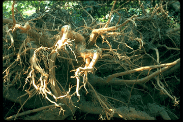
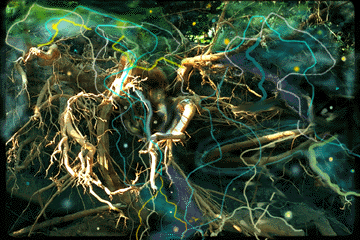
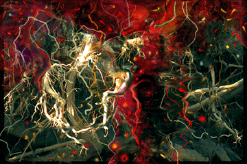
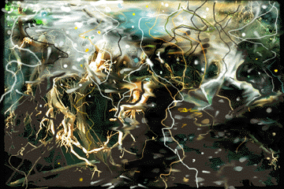

"Photograph of Roots"(1)

"Underwater" Altered reality print using Photo of Roots (1)

"Fireroot" Altered reality print using Photo of Roots (1)

"Spring Snow" Altered reality print using Photo of Roots (1)
The Root Series, samples of which are included here, happened as a result of Hurricane "Bob " several years ago on Long Island. I watched through a window of my small cottage (I shouldn't have been there) as the winds and rains raged. One of my favorite big trees, a very old Honey Locust (over I50 years old) and over 75 feet tall began to sway. As I watched, a scene out of a science fiction film began to evolve. The tree began to go over (away from me, thankfully) and sucking sounds were heard above the sounds of the high winds. The earth began to heave, actually HEAVE! And with a diameter of over 14 feet, roots began to tear loose from the earth, emerging higher and higher as the tree went over. As sad as I was about the loss of this magnificent tree, the experience was enormous and I was sad not to have a video camera.
All I could do when it was all over, was to photograph the roots that were now part of my landscape. And from the photographs came drawings (one included here) paintings and many of my "altered reality" prints. Some of these and the original photographs are included here.
Since my work deals with the SEEN and the UNSEEN in nature (as inside the water) the unearthed roots were the unseen becoming the seen.
 Return to Main Page
Return to Main Page